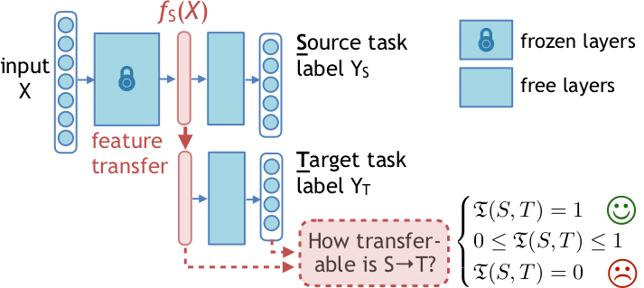
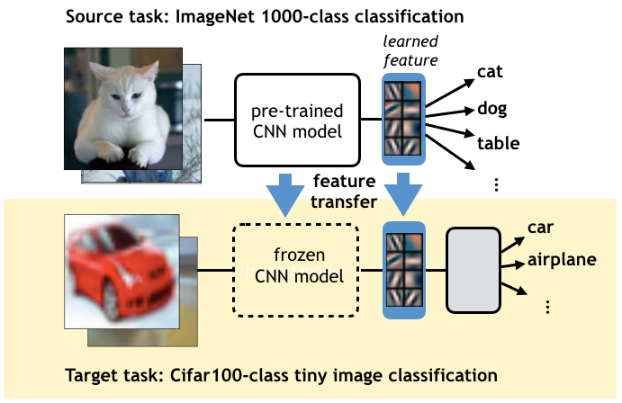

The Transferability Problem
Introduction
Task transfer learning is a learning paradigm that leverages the learned representation from a source task to help training a related target task. It is a common practice in computer vision, such as using the features of a pre-trained ImageNet 1000-class classification model on a different image recognition task by fine-tuning it with the new data. This technique has demonstrated superior performance than training without the transferred feature in many fields, such as computer vision, NLP and information systems.  Fig. 1: Illustration of task transfer learning from ImageNet-1000 to Cifar-100
However, there lacks an efficient and theoretically meaningful way to determining task transferability, i.e. to what extent transferring from the source task can help the learning of the target. Such a metric is especially important for designing effective transfer learning strategies for multiple tasks, as it provides a guarantee on good transfer performance between the source and the target tasks.
In our research, we developed a transferability metric using concepts from statistics and local information geometry. Experiments on both image-based 3D scene understanding tasks and NLP tasks showed that our metric not only correctly characterizes transfer performance, it is also highly effective in practice for neural network model selection. Based on this result, we are currently developing a multi-task curriculum learning algorithm that optimizes the order in which different tasks should be learned, and the direction of knowledge transfer to reduce the learning cost of a task collection.
 Fig.2: The task transferability problem